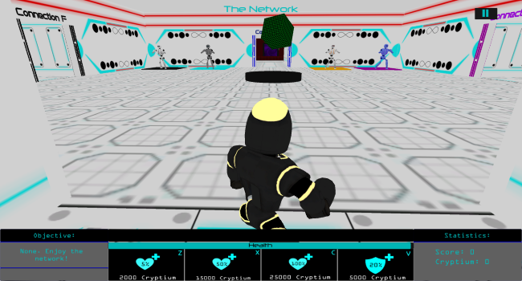
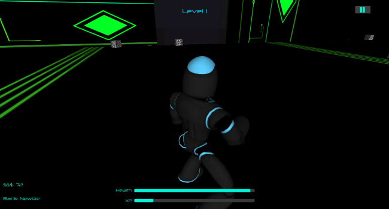
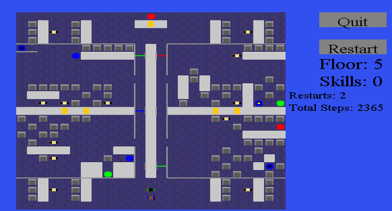

Here is a gallery of all the projects I worked on, some of which have been completed. Below are different pictures of my projects as a preview, as well as a link to my projects. My projects are either download files, public Github repositories, or different webpages.

Project Name: Server Showdown
Developed: December 2015 - May 2016 by Kyle Wong, Marcus Wong, and Jeffrey Wang
Description: Server Showdown is a science fiction role-playing game featuring a network robot and various redirect robots and network infiltrators. This game features 10 levels of gameplay, featuring levels requiring the player to go scavenger hunt or eradicate corrupted data network robots. Customization and currency are implemented to enhance gameplay, while providing the player information about the network structure and potential network breaches.

Project Name: A Breach in the System
Developed: January 2015 - July 2015 by Hao Chen, Alyssa Deng, and Kyle Wong
Description: A Breach in the System is a science fiction action game featuring a virus tracker and various computer viruses. Featuring 7 levels of gameplay including a network boss level, this game serves to provide entertainment as well as information regarding cybersecurity practices within the computer system.

Project Name: Office Scramble
Developed: January 2015 - July 2015 by Kyle Wong and Nathan Kim
Description: Office Scramble is a simple puzzle game involving mazes, teleports, and activated and deactivated doors. This game is made with the BlueJ IDE, designed with Paint.NET, and programmed with Java
Description: This is a programming project in Lua using ROBLOX Studio, where I used a 2D GUI to simulate a 3D environment, moving by means of WASD/QE/RF keys. The rendering objects are 2D textures. Through this rendering script, I constructed a small game in ROBLOX called Stargazing (requires ROBLOX account to play).